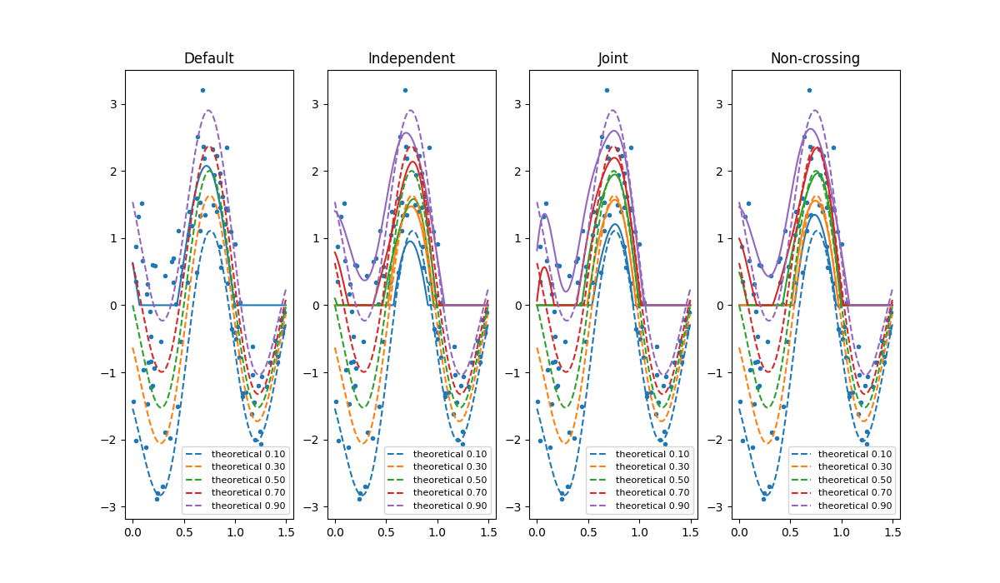

Joint quantile regression with operator-valued kernels¶
An example to illustrate joint quantile regression with operator-valued kernels.
We compare quantile regression estimation with and without non-crossing constraints.
Out:
Creating dataset...
Fitting...
joint leaning time: 0.235834121704
joint score 0.7703945361
independant leaning time: 0.143927097321
independant score 0.769375053019
non-crossing leaning time: 0.735819101334
non-crossing score 0.769973790545
# Author: Maxime Sangnier <maxime.sangnier@gmail.com>
# License: MIT
# -*- coding: utf-8 -*-
from operalib import Quantile
import numpy as np
import time
from scipy.stats import norm
import matplotlib.pyplot as plt
def toy_data(n=50, probs=[0.5], noise=1.):
"""Sine wave toy dataset.
Parameters
----------
n : {integer}
Number of samples to generate.
probs : {list}, shape = [n_quantiles]
Probabilities (quantiles levels).
Returns
-------
X : {array}, shape = [n]
Input data.
y : {array}, shape = [n]
Targets.
quantiles : {array}, shape = [n x n_quantiles]
True conditional quantiles.
"""
t_min, t_max = 0., 1.5 # Bounds for the input data
t_down, t_up = 0., 1.5 # Bounds for the noise
t = np.random.rand(n) * (t_max - t_min) + t_min
t = np.sort(t)
pattern = -np.sin(2 * np.pi * t) # Pattern of the signal
enveloppe = 1 + np.sin(2 * np.pi * t / 3) # Enveloppe of the signal
pattern = pattern * enveloppe
# Noise decreasing std (from noise+0.2 to 0.2)
noise_std = 0.2 + noise * (t_up - t) / (t_up - t_down)
# Gaussian noise with decreasing std
add_noise = noise_std * np.random.randn(n)
observations = pattern + add_noise
quantiles = [pattern + norm.ppf(p, loc=np.zeros(n),
scale=np.fabs(noise_std)) for p in probs]
return t[:, None], observations, quantiles
np.random.seed(0)
print("Creating dataset...")
probs = np.linspace(0.1, 0.9, 5) # Quantile levels of interest
x_train, y_train, z_train = toy_data(50)
x_test, y_test, z_test = toy_data(1000, probs=probs)
print("Fitting...")
# Joint quantile regression
lbda = 1e-2
gamma = 1e1
joint = Quantile(probs=probs, kernel='DGauss', lbda=lbda, gamma=gamma,
gamma_quantile=1e-2)
# Independent quantile regression
ind = Quantile(probs=probs, kernel='DGauss', lbda=lbda, gamma=gamma,
gamma_quantile=np.inf)
# Independent quantile regression (with non-crossing constraints)
nc = Quantile(probs=probs, kernel='DGauss', lbda=lbda, gamma=gamma,
gamma_quantile=np.inf, nc_const=True)
# Fit on training data
methods = {'joint': joint,
'independant': ind,
'non-crossing': nc}
for name, reg in methods.items():
start = time.time()
reg.fit(x_train, y_train)
# pred = joint.predict(x_test)
print(name + ' leaning time: ', time.time() - start)
print(name + ' score ', reg.score(x_test, y_test))
# Plot the estimated conditional quantiles
plt.figure(figsize=(12, 7))
for (i, (reg, title)) in enumerate(
[(joint, 'Joint'),
(ind, 'Independent'),
(nc, 'Independent (non-crossing)')]):
plt.subplot(1, 3, i + 1)
plt.plot(x_train, y_train, '.')
for q in reg.predict(x_test):
plt.plot(x_test, q, '-')
for q in z_test:
plt.plot(x_test, q, '--')
plt.title(title)
plt.show()
Total running time of the script: (0 minutes 1.637 seconds)
Download Python source code:
plot_ovk_quantile_regression.py
Download IPython notebook:
plot_ovk_quantile_regression.ipynb